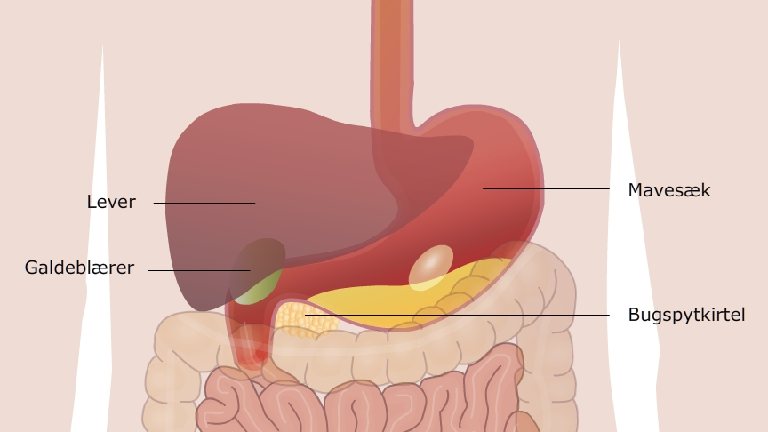

Fra spiserøret kommer maden ned i mavesækken. Mavesækken indeholder saltsyre der dræber de bakterier der er i maden, så de ikke angriber vores krop og gør os syge.
I maven er der også enzymer der kemisk nedbryder det protein der er i maden til polypetider (kortere proteinkæder).De enzymer der nedbryder protein vil gerne have det surt og det er endnu en grund til at vi har mavesyre.
